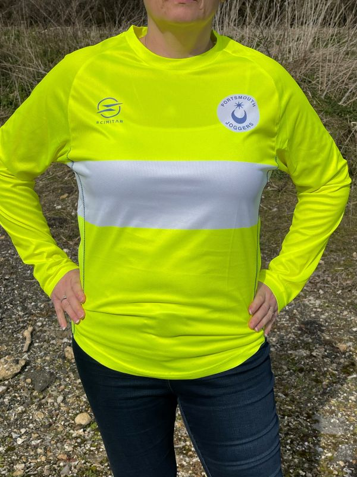

Club Kit
We have a range of technical shirts and vests in club colours (blue and white). We also have hi-viz yellow technical shirts for winter evenings. The blue shirts and vests are available in ladies and gents fit but the hi-viz shirts are unisex. Other sundries such as bags, buffs, hats, and race-bib magnets are available too, to complete the PJC aesthetic.
Pop-up kit shops are held frequently at Lakeside prior to our club runs; these give you an opportunity to try things on and see what works for you. If we don't have your size in stock, let us know and we'll order it in.
Please note that to compete in the HRRL and SCCL races it is compulsory to wear a blue and white club t-shirt or vest.
PJC Kit is managed by Chris Ellis. Please speak to your group leader if you need to be put in touch with him to purchase kit outside of club nights.
Club T-Shirts
Club Colours Gents T-Shirt (Front)
Club Colours Gents T-Shirt (Rear)
Club Colours Ladies T-Shirt (Front)
Club Colours Ladies T-Shirt (Rear)
Club Vests
Club Colours Gents Vest (Front)
Club Colours Gents Vest (Rear)
Club Colours Ladies Vest (Front)
Club Colours Ladies Vest (Rear)
Hi-Viz T-Shirt
Hi-Viz T-Shirt (Front)
Hi-Viz T-Shirt (Rear)
Hi-Viz T-Shirt (Front)
Hi-Viz T-Shirt (Rear)
Hi-Viz Long Sleeve
Hi-Viz Long Sleeve (Front)
Hi-Viz Long Sleeve (Rear)

Hi-Viz Long Sleeve (Front)
Hi-Viz Long Sleeve (Rear)
Other Items
Other sundry items are available on kit nights.